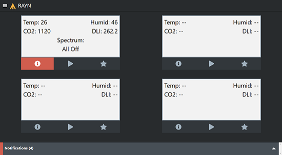
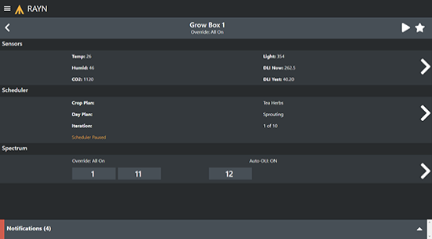
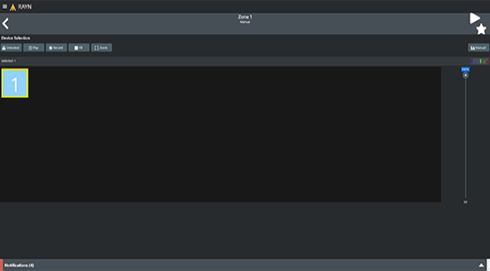
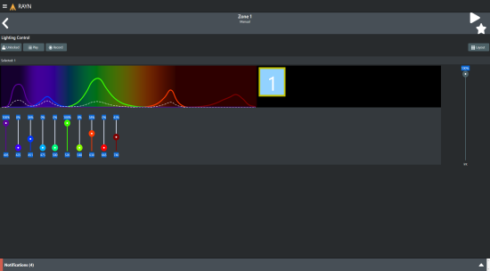

RAYN Syrcadia Remote
The RAYN Syrcadia Remote is a web-based application allowing you to control RAYN Syrcadia from a web browser on a device connected to the same network.
Note: RAYN Syrcadia on PC may be commissioned as Base or Unlocked. Syrcadia Base does not support the Remote.

Connecting to RAYN Syrcadia
First, ensure that your mobile device is on the same subnet as your RAYN Touch controller or RAYN Syrcadia PC, and has an IP address compatible with that subnet. The controller's network settings can be noted or altered via Settings > Preferences > Network. If using a PC, the network settings are found in Windows settings.
Once your mobile device's information is correct, scan the QR code in Settings > Preferences > Remote to be taken to the web-based app.
PIN Codes
PIN codes can be used to limit the remote's available interactions with the RAYN Syrcadia.
When the Use PIN codes for login setting is enabled on Settings > Preferences > Remote, one of the two PINs will need to be entered when the app is opened in order to use the remote.
Using the Remote
The Home page of the remote behaves similarly to the RAYN Syrcadia Dashboard, showing the status of each zone and accompanying alert, spectrum, and override indicators. Any Dashboard > Notifications can be expanded by tapping the Notifications bar at the bottom of the screen.
At any time, you can return to the Home page by tapping the menu icon in the top left of the screen. This menu also provides version information for the remote app. You can also return to Home by tapping the RAYN logo to the right of the menu icon.
Overrides Menu (Star Icon)
The overrides menu is accessible via the star icon in the zone overview toolbar, or in the top right of any page once a zone is selected. This button will take you to a list of all associated Setup > Override, and allow you to activate them.
Zone Overview

Tapping any of the zones will take you to an overview page with details about the zone and its associated devices, scheduler data, and spectra. See Settings > Devices, Zones > Scheduler, and Setup > Spectrum for further details and control options.
Sensors
This section provides an overview and controls of the selected zone's sensor data, similar to the Zones > Sensors tab of RAYN Syrcadia.
Note: RAYN Syrcadia on PC may be commissioned as Base or Unlocked. Sensors are not available in Syrcadia Base.
Scheduler
This section provides an overview of the selected zone's scheduler data, similar to the Zones > Scheduler tab of RAYN Syrcadia.
Spectrum

This section provides an overview of the selected Setup > Spectrum information, and optional controls similar to the Zones > Manual tab of RAYN Syrcadia.
Device Selection
This section allows control over one or more of the selected zone's patched devices. The following options are available:
- Locked/Unlocked - tap to toggle control of the zone's devices on or off.
- Play - displays a list of associated spectra, which can then be played.
- Record - displays a list of associated spectra, which can then be overwritten.
- All - selects all device tiles at once.
- Zoom - resizes the device tiles to fit them to the screen size.

Devices can be selected directly by tapping one or more of the device tiles. Selected devices can then be controlled using the intensity slider to the right. The device topology can also be freely zoomed and panned to change which device tiles appear. For control over individual color spectrum wavebands for selected devices, tap the Manual button in the top right. Devices cannot be selected or deselected from this view. To change your selection, return to the Layout view.